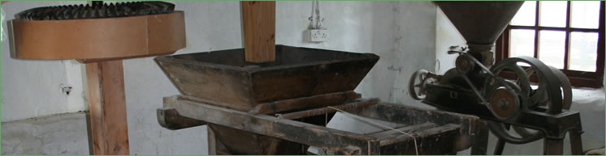

Mill Conversions
 |
{kind=link}
Cotton Mills The first cotton mill in Scotland was built at Esk Mills. In 1777 Peter Brotherston of the Cotton Spinning School in Edinburgh was granted a tack for the site. The large water wheel powered machinery for the carding, roving and spinning of cotton. His mill was modelled on that of Richard Arkwright of Nottingham, who threatened to stop the operation. However, the Lord Advocate’s opinion was that Arkwright’s patent did not apply in Scotland. The village of Kirkhill was built to house the workers. A second cotton mill was added and by 1794 there were some 500 people employed at Esk Mills. John Brotherston took on the tack in 1786. The mills and the Little (or Low) Paper Mill were under the ownership of John White in 1796. Financial difficulties were encountered with a down turn in trade, high raw material costs and competition. Esk Mills were put up for sale in 1804. Many mills followed the pioneering example of Peter Brotherston. Cotton Mills at New Lanark and Stanley, Perthshire still survive as museums. Esk Mills were purchased in 1805 by two distillers, James Haig and John Philp for their brother-in-law, John White. He converted one of the cotton mills to paper, but continued to supply cotton until the mills were leased to the Transport and Barracks Board in 1811. Waulk Mills Waulk (or fulling) Mills powered by water were used for finishing woven cloth. Untreated cloth was loose and greasy. Washing and pounding with water-driven hammers shrank, thickened and felted the cloth. It was then rinsed and squeezed in a giant mangle. Finally, to smooth out the crumples, it was stretched and dried under tension on tenterhooks. |
||||
Advertisement
Edinburgh Evening Courant The two Cotton Mills of Eskmills at Penicuik situated about 9 miles to the South of Edinburgh with a most excellent Dwelling House for a Manager or Overseer. Fall of water 22 feet and about 40 acres of land belonging to the Mill. There are 3432 water spindles in both mills with suitable machinery. Also 9 Mule Jeanies each containing 180 spindles and about 70 Apartments for Workers, Feu £50. Apply Wm. Scott Moncreiff, Accountant, Edinburgh, Trustee on the Sequestered Estates of John White & Co., Cotton Spinners at Eskmills, Penicuik 14 July 1804 17 November 1804 The upset price reduced from £9,000 to £7,000. 8 April 1805 The upset price was advertised in the same paper as reduced to £5,000. |
||||
|
This process replaced the previous slow and laborious method of washing with soap and urine and beating by hand. When Agnes Campbell built her paper mill, a waulk mill built by David Wilson in 1707 lay just downstream. When he died in 1749 his son sublet it to Richard Nimmo, an Edinburgh Stationer, who converted it into a paper mill. This mill was known as the Little (or, more popularly, Low) Paper Mill. There was a second waulk mill on the south bank of the Esk about half way between Low Mill and Esk Mills. John Thomson was granted a tack for 21 years in 1773. By 1796 it had come into the hands of John White. In 1805 it was unoccupied. Alexander Haig became the owner about this time but it had fallen into disuse by 1825. Corn Mill In 1708 when Agnes Campbell was looking for a convenient stand to place a paper mill, Alexander Gill was the tacksman of the Miln of Pennycook. His agreement was needed to carry water from the dam through his ground and for access to Mungo’s well-spring. Rural corn mills served most of the estates in Scotland. Overtime these mills had many tenants. In 1662 John Clerk gave instructions to John Lowrie at Pennycooke Mill regarding tenants who were evading payment of multures (dues). In 1772 Robert Wilson, the tenant in 1736, was being obliged to remove from Pennycuik Mill. A year earlier, David Moffat had taken in tack the Corn Mill of Penycok for 10 years. In 1803, Messrs Cowan purchased the corn mill and converted it to making paper. |
||||
{kind=link}
{kind=link}


Penicuik Historical Society :: Penicuik Town Hall :: 33 High Street :: Penicuik :: EH26 8HS
e-mail :: info@penicuikpapermaking.org
e-mail :: info@penicuikpapermaking.org
© Penicuik Historical Society :: site by Wallace Web Design